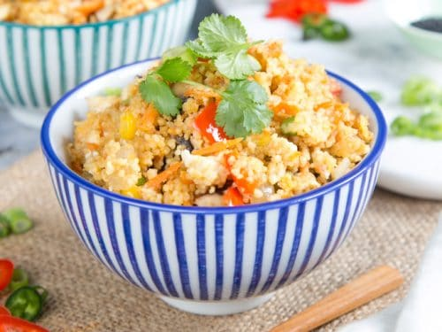

Pearl Cous Cous Fried Rice

Fast, clean, fried-rice style cous cous using leftovers and vegetable scraps. Great hot or cold and keeps well in the fridge all week.
Ingredients
- 4 Cups Water
- 2 Cups Pearl Cous Cous
- 2-3 bullion cubes of your choice
- 4 eggs
- any left over cooked meat or none at all to keep it vegetarian
- any frozen thawed out peas, carrots, thin green beans
- green onion
- cilantro
- siracha to taste
- 3 teaspoons of sesame oil
- honey and/or sweet and sour sauce to taste
- terriaki and/or soy soyce to taste